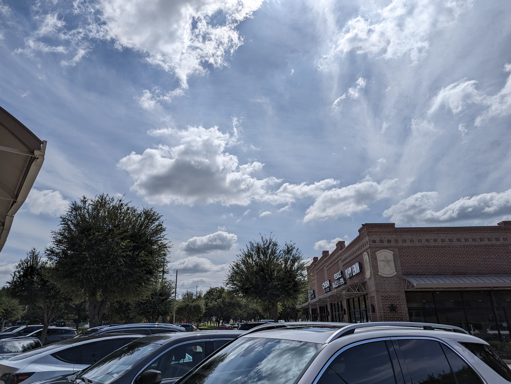
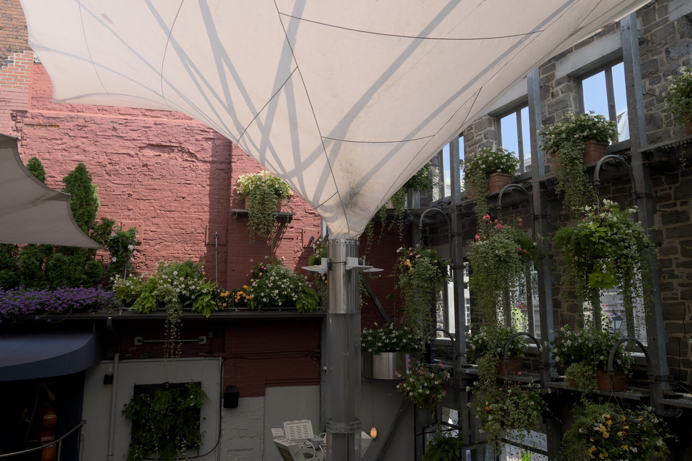
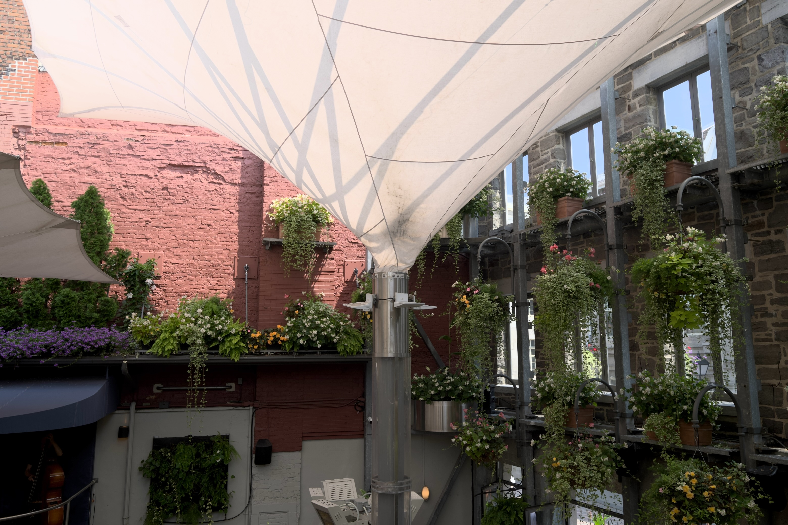
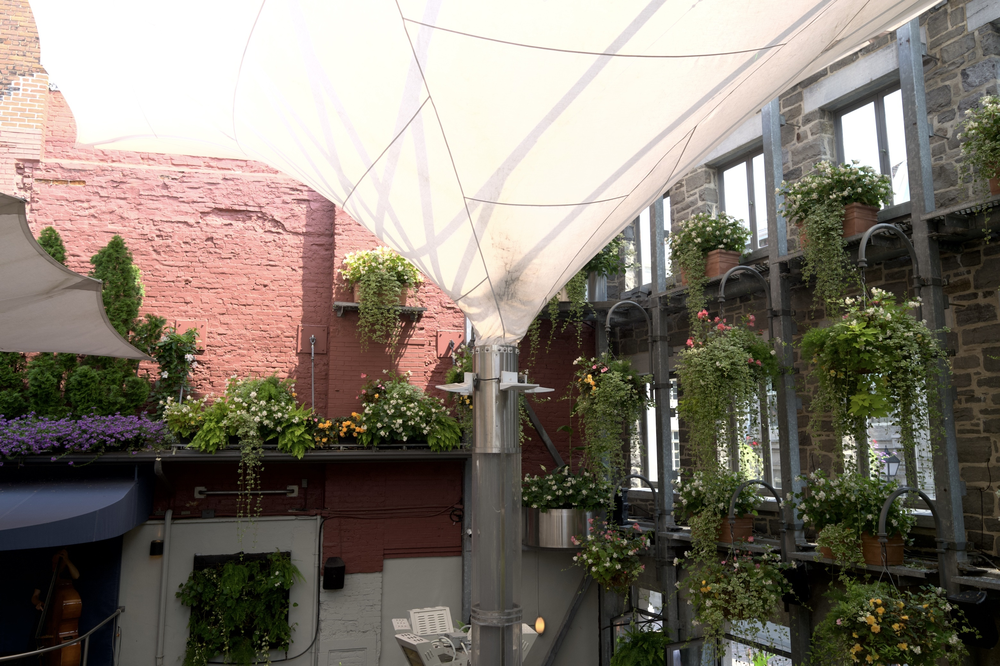

Which HDR image formats actually render as HDR, per browser and per device.
How to read this page. On an HDR-capable screen, images 1–3 should show highlights
noticeably brighter than this page's white background. Image 4 is the SDR control and should never
do that. If an image looks flat or dull next to the control, that browser is showing you its SDR base
and ignoring the HDR data.
Note which of 1–3 pop on each browser and device. That combination identifies what is supported.
Test 1 · Google Ultra HDR
Gain-map JPEG, Ultra HDR signalling
Shot on a Pixel 6 Pro. Carries hdrgm and Container:Directory on the
primary image — the signalling Chrome's gain-map path looks for. Declared headroom 6.31×.
This is the known-good reference: if gain-map JPEG works at all in a browser, it works here.

Test 2 · Apple gain map
Gain-map JPEG, as ApolloOne writes it
Same scene as the SDR control. Written by CoreImage on macOS 15: carries Apple's AROT
segment, and the gain-map metadata sits on the sub-image rather than the primary. No
Container:Directory. Declared headroom 8.20×.
Test 3 · AVIF PQ
HDR AVIF, no gain map
Same scene again, exported as AVIF with BT.2020 primaries and the PQ transfer function, signalled
through CICP. No gain map and no SDR fallback — a browser either understands PQ or it doesn't.
Test 5 · Fix candidate A
ApolloOne file with Ultra HDR signalling added
Test 2's file with hdrgm:Version and a Container:Directory injected into
the primary image. Nothing re-encoded — same pixels, same gain map, same
AROT segment, byte-identical size. Only the signalling changed.
Still declares headroom 8.20×.
If this pops in Chrome where test 2 didn't, signalling was the whole problem.

Test 6 · Fix candidate B
Same, plus headroom capped to 3×
Test 5 with the declared headroom brought down from 8.20× to 3×, which lifts the SDR base
roughly half a stop. That base is what Safari on Sequoia, Firefox, and every SDR screen actually
show, so it has to look like a decent photograph on its own.
Compare against test 4 on a screen showing SDR — this one should sit much closer to
it than test 2 does.

Test 7 · Fix candidate C
Real SDR rendering as the base, full headroom kept
Instead of deriving the SDR base by compressing the HDR master, this uses test 4 — the
proper SDR export — as the base, with the gain map carrying the difference up to the master.
Full 8.20× headroom retained, Ultra HDR signalling present.
The base here is pixel-for-pixel the SDR export, so an SDR viewer sees a correctly rendered
photograph rather than a brightened flat one.
On a screen showing SDR this should look like test 4, not washed out; on Chrome and
iPhone it should be as bright as test 5.

Test 4 · SDR control
Ordinary JPEG
Plain sRGB, no HDR data of any kind. This is the baseline — judge the three above against it.
What each outcome means
Result
Reading
1 and 2 both bright
Browser handles gain-map JPEG in both flavours. Nothing to fix.
1 bright, 2 flat
Browser wants Ultra HDR signalling. ApolloOne needs to add it.
1 and 2 flat, 3 bright
Browser does PQ but not gain maps. AVIF is the delivery route.
All flat
No web HDR on this browser or device, whatever the file says.
5 bright where 2 was flat
Signalling confirmed as the fix. Ship it in ApolloOne.
6 closer to 4 than 2 is
Headroom cap confirmed as the fix for the SDR fallback.